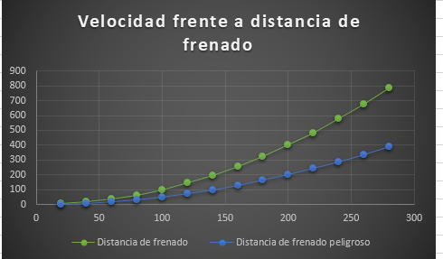

Riesgos: Maneja con cuidado cuando está lloviendo, tener cuidado en curvas, no estar distraído en el celular cuando estes manejando. prevenciones:poner los cinturones de seguridad, obedecer señalamientos , tener cuidado al manejar. La física nos ofrece una oportunidad excepcional para hacer que los futuros conductores conozcan los riesgos asociados a la conducción y para poner de manifiesto la lógica que subyace en la mayoría de las normas de circulación. También, para prevenir que ocurran accidentes de vehículos hay que ir a la velocidad señalada con la distancia necesaria para evitar una colisión con otro carro, hay que manejar sin distracciones. También es muy importante revisar las condiciones en la que se encuentra el camino ademad de las condiciones climáticas para evitar una colisión. en las que se encuentra el vehículo para evitar fallas. Para mostrar esto se inserto el siguiente grafico donde muestra las distancias de frenado normal y de riesgo.
